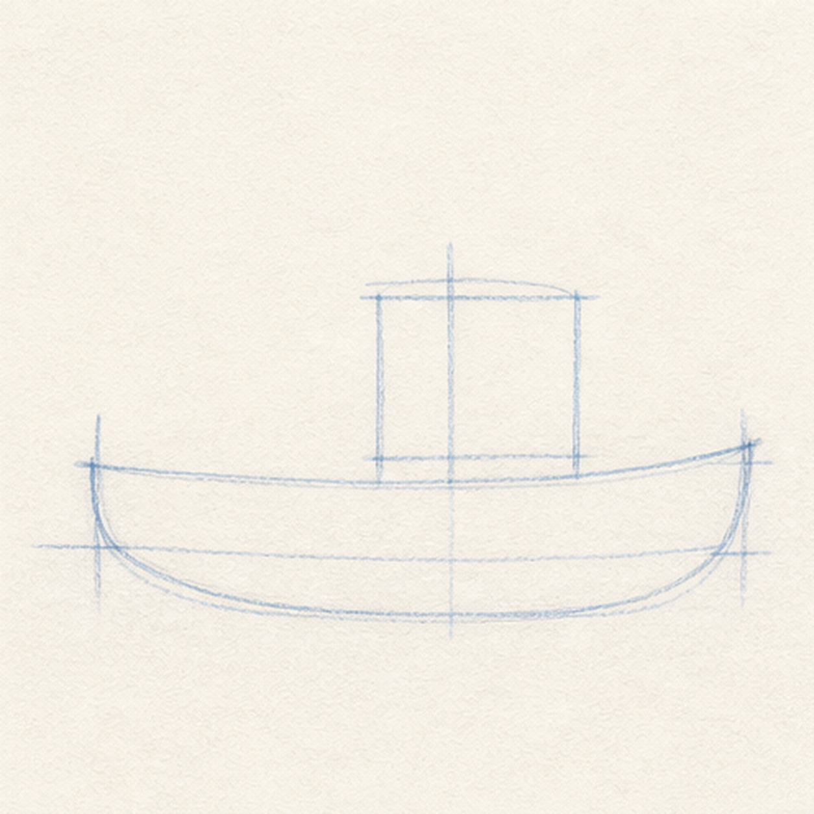
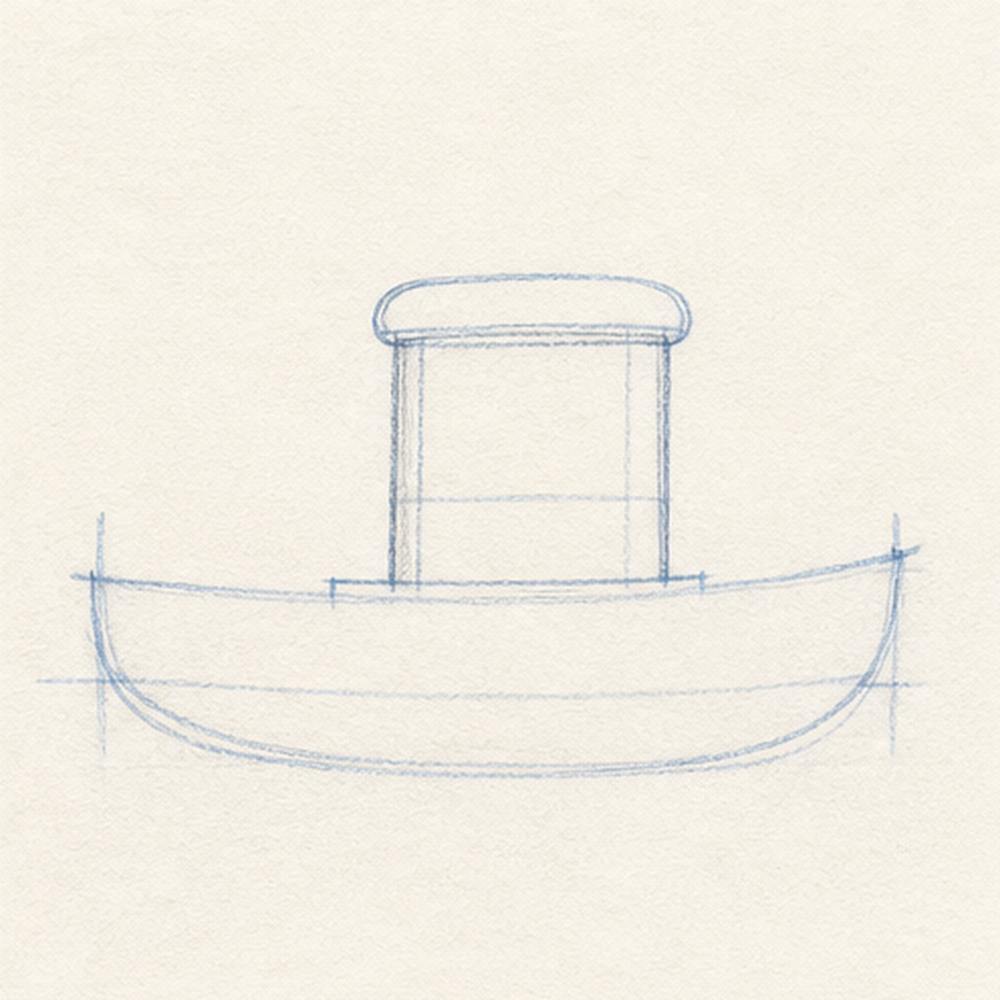
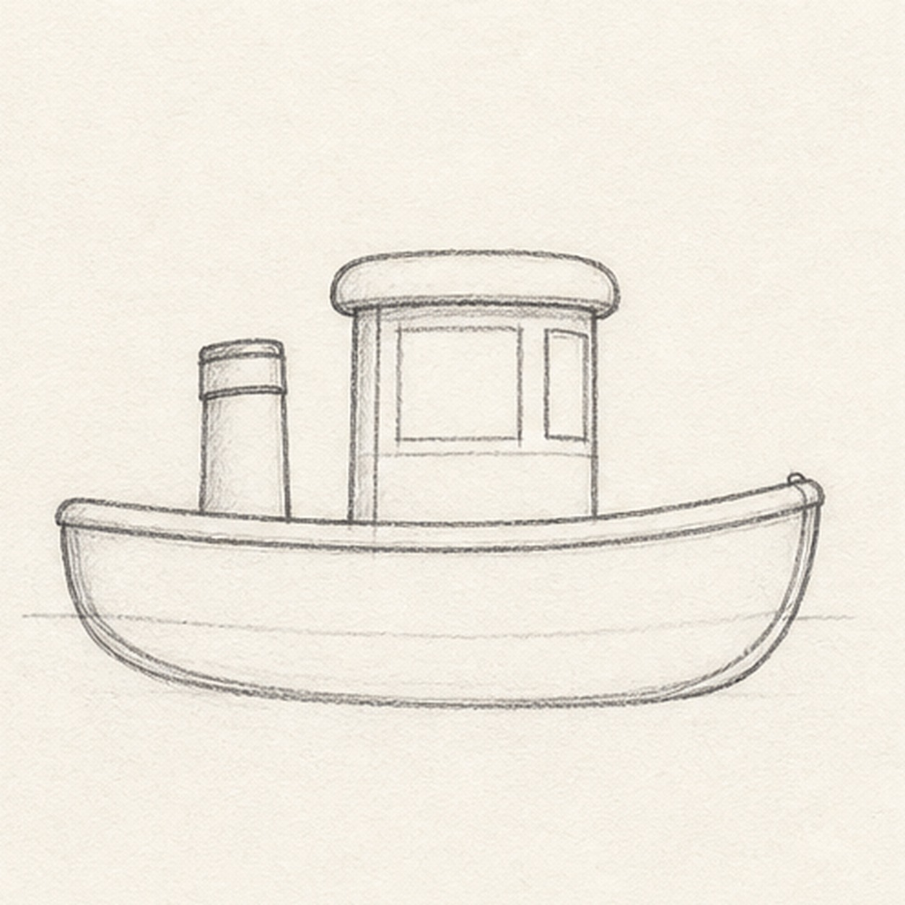
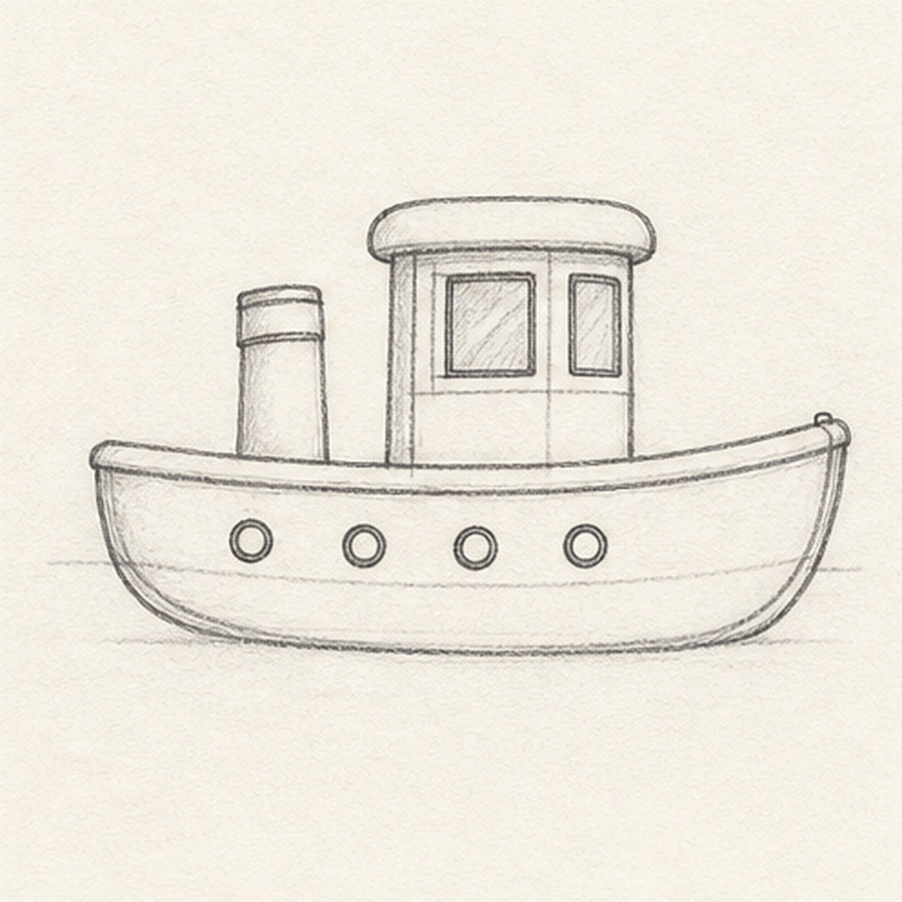
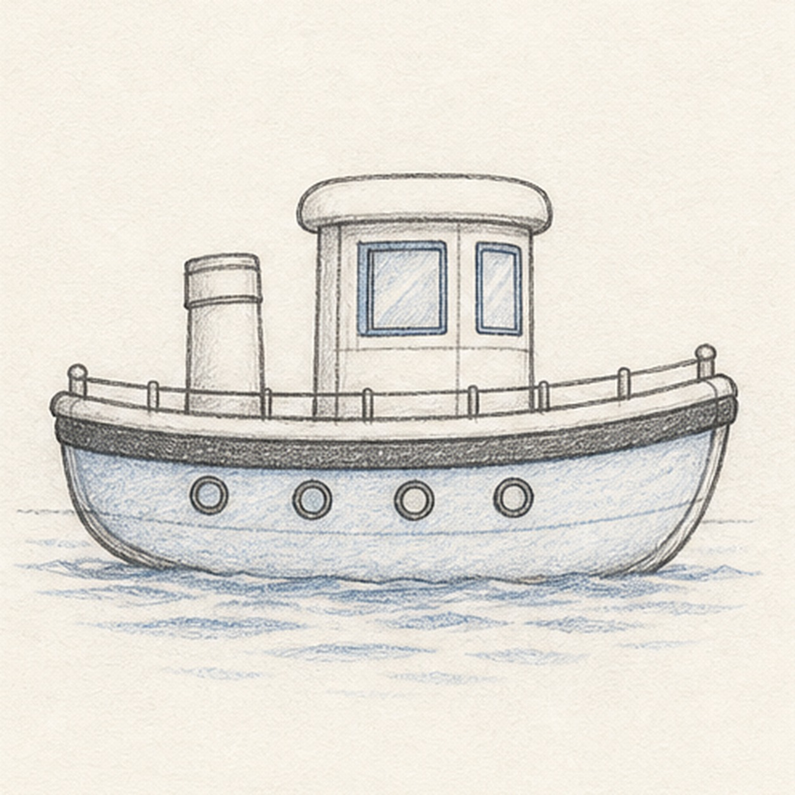

From the archive
Let's draw a tugboat
Treat this as one small practice round: build the subject lightly, notice the shapes, then darken only the lines that help the finished sketch.
-
01

Block in the hull
Draw a long shallow boat curve, then add a second lower curve to make the rounded hull. Place a light box guide where the cabin will sit.
Sketch tip: Keep the bow and stern tips level. A calm, even hull makes the rest of the tugboat easier to stack.
-
02

Stack the cabin
Set a boxy cabin on the deck line and cap it with a soft rounded roof. Let the roof overhang the cabin just a little.
Sketch tip: Use vertical cabin sides. If they lean too much, the tugboat starts to look like it is tipping.
-
03

Refine the boat outline
Darken the bow, stern, deck edge, cabin sides, and roof, then add a short smokestack behind the cabin.
Sketch tip: The smokestack should be shorter than the cabin. That keeps the drawing friendly instead of top-heavy.
-
04

Add the windows
Draw small round portholes along the hull and simple rectangular windows on the cabin.
Sketch tip: Space the portholes like beads on the hull curve. They do not need to be perfectly identical.
-
05

Place rails, ripples, and color
Add a short deck rail, a dark bumper stripe, loose water ripples, and a few light blue pencil touches in the windows and waves.
Sketch tip: Save the darkest stripe for the bumper line. It helps the pale boat read clearly at card size.
-
06
Finish the keeper lines
Deepen the hull, cabin, roof, stack, windows, portholes, rail, bumper stripe, ripples, and blue accents without adding a harbor or extra boats.
Sketch tip: Stop while the graphite still feels sketchy. A few broken water marks are more useful than a fully rendered sea.